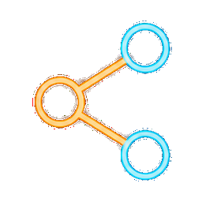
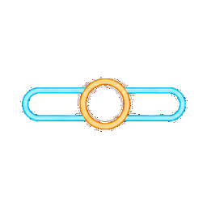

The Unreasonable Effectiveness of HTML — Thariq Shihipar, Anthropic
整理：tinokuo · 2026-06-23 · 本頁本身就是一份 HTML
2026 年 5 月，Thariq Shihipar（Anthropic Claude Code 團隊技術成員）發表長文，主張停止把 Markdown 當成 AI 產出的預設格式。


## 銷售報告 - Q1： 120 - Q2： 180 - Q3： 240 | 區域 | 業績 | |------|------| | 北區 | 320 | | 南區 | 210 |
| 區域 | 業績 |
|---|---|
| 北區 | 320 |
| 南區 | 210 |
重點是「配合產物的生命週期」選格式，而不是替誰加冕。
「HTML 簡報」專案落在 HTML 勝出 那側 —— 給人看、要視覺與排版的最終產出。
而你正在看的這份簡報本身，就是一份自包含、可互動的 HTML —— 以身作則。